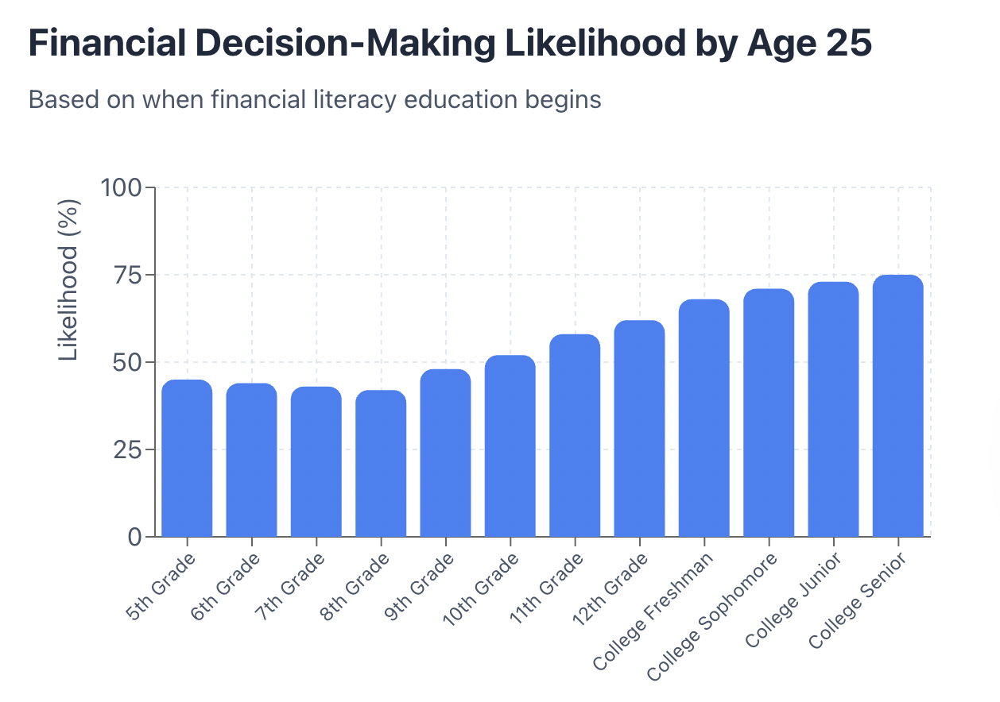
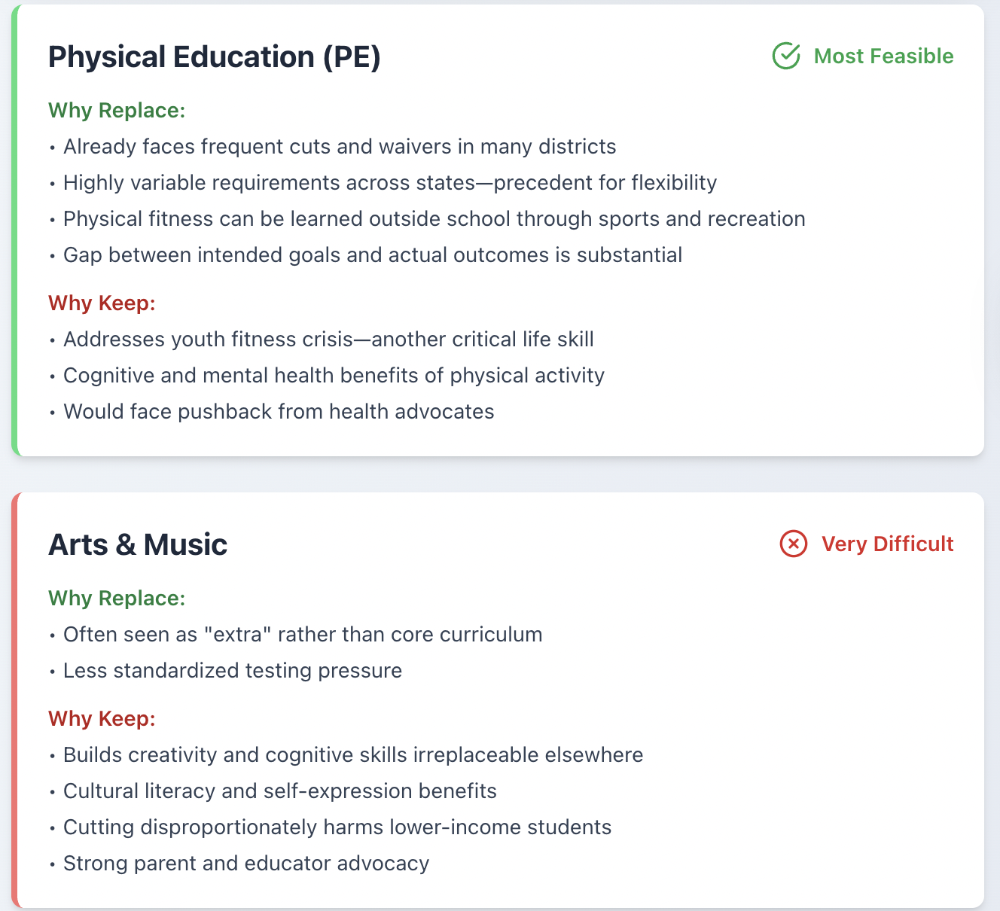
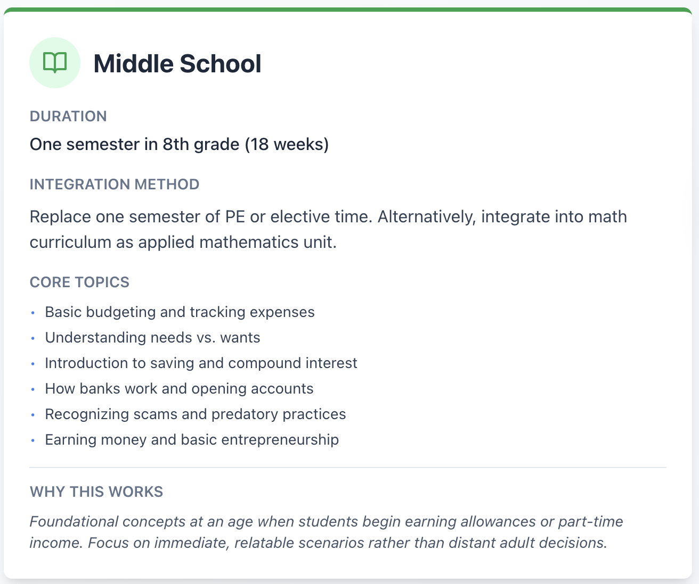

The majority of Americans are unaware of how to manage their money when they enter early adulthood. Without conducting their own research, young adults are left oblivious to credit, financial management, investing, and building a sustainable net worth. Education is mandated for all US children until the completion of 12th grade, and despite offering electives in different educational areas, few schools offer students the opportunity to learn about money. Should courses on financial literacy be a required offering at all secondary and higher education schools? Should it become a mandated component of the standard curriculum? If so, at which point in a student’s education should such content be introduced, and should it replace other sub-topics that are taught universally? How can AI help us to better integrate financial literacy courses into schools?
Prompt: should financial literacy become a core part of school curriculum
Response:
Pros: - Many adults struggle with basic financial decisions (debt, interest rates, retirement savings), leading to real hardship that early education could prevent Creates equity—wealthier families teach money management at home, while others lack access to this knowledge - Practical life skill with tangible, long-term benefits
Cons: - Schools already overcrowded with “essential” topics—something else would need to be cut or school hours extended - Research shows standalone financial literacy courses often have limited long-term impact—students forget or struggle to apply lessons years later - Financial decisions are often more about behavior and circumstances than knowledge
Middle ground: - Integrate financial concepts into existing subjects (compound interest in math, economic policy in history, advertising analysis in English) - Offer as an elective rather than required course, with resources available when students need them
How would the financial health of america’s population change, if academic interventions for financial literacy were made
- What studies actually show:
Most rigorous evaluations find that school-based financial literacy programs produce small improvements in financial knowledge, but these gains often fade over time The impact on actual financial behaviors (saving rates, debt levels, credit scores) is typically modest at best—many studies find no significant long-term effects A major meta-analysis found that financial education explains only about 0.1% of variance in financial behaviors—far less than factors like income, employment stability, or family background
- Why interventions underperform expectations:
Timing problem: Teaching 16-year-olds about mortgages or retirement accounts doesn’t stick when they won’t need that information for years or decades Knowledge-behavior gap: Understanding compound interest doesn’t automatically translate to consistent saving, especially when facing immediate financial pressures Structural barriers: Financial literacy can’t overcome low wages, high cost of living, medical debt, or lack of access to affordable banking services
Realistic impact if widely implemented: America’s population would likely see marginal improvements—perhaps slightly fewer predatory loan victims, modestly better credit scores among some groups, incrementally higher emergency savings. But we wouldn’t see dramatic shifts in overall financial health without addressing underlying economic factors like wage stagnation, healthcare costs, housing affordability, and wealth inequality.

Prompt:which class universally offered in schools across the united states would make the most sense to replace with financial health courses
Response:

I asked the LLM to craft 3 potential plans for integrating financial literacy into standard curriculum.
